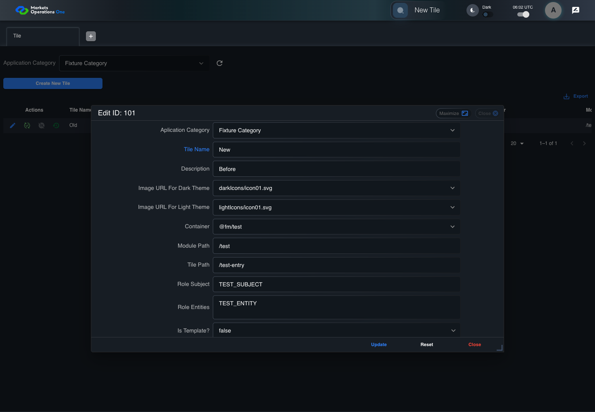
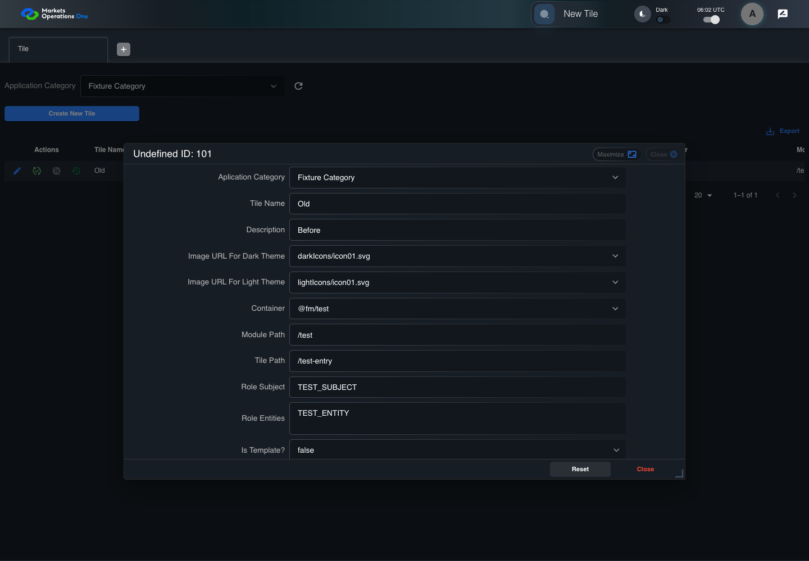

UX-055 administration boundary with step screenshots
FAIL · application/run-050/ux-055-administration-boundary-with-step-screenshots-643806e944b9-attempt-1 · ACTUAL_APPLICATION_LOCAL_SERVICES
Actual React administration screens. Controlled browser credentials, role, records, and BFF responses. Save probes persist the received UI payload without replacing it with expected values. Declared clock emulation controls field timers. Proposed accessibility and source-risk expectations remain separate from business approval.
2026-10-22T06:02:11.399Z to 2026-10-22T06:02:23.215Z
Assertions and result · Artifact manifest · Exact run inputs and source hashes
Result SHA-256:f133fb918b05dc70caec65db236ed7e14f3be34884e87fd524d9b886b1e0c098Retained failure details
[
{
"message": "Error: \u001b[2mexpect(\u001b[22m\u001b[31mlocator\u001b[39m\u001b[2m).\u001b[22mtoHaveValue\u001b[2m(\u001b[22m\u001b[32mexpected\u001b[39m\u001b[2m)\u001b[22m failed\n\nLocator: locator('[role=\"tabpanel\"]:visible').locator('[role=\"dialog\"]').filter({ has: getByText(/^(?:new|edit|verify|deactivate) ID:/) }).getByRole('textbox', { name: 'Tile Name', exact: true, includeHidden: true })\nExpected: \u001b[32m\"Old\"\u001b[39m\nTimeout: 5000ms\nError: element(s) not found\n\nCall log:\n\u001b[2m - Expect \"toHaveValue\" locator('[role=\"tabpanel\"]:visible').locator('[role=\"dialog\"]').filter({ has: getByText(/^(?:new|edit|verify|deactivate) ID:/) }).getByRole('textbox', { name: 'Tile Name', exact: true, includeHidden: true }) with timeout 5000ms\u001b[22m\n\u001b[2m - waiting for locator('[role=\"tabpanel\"]:visible').locator('[role=\"dialog\"]').filter({ has: getByText(/^(?:new|edit|verify|deactivate) ID:/) }).getByRole('textbox', { name: 'Tile Name', exact: true, includeHidden: true })\u001b[22m\n",
"stack": "Error: \u001b[2mexpect(\u001b[22m\u001b[31mlocator\u001b[39m\u001b[2m).\u001b[22mtoHaveValue\u001b[2m(\u001b[22m\u001b[32mexpected\u001b[39m\u001b[2m)\u001b[22m failed\n\nLocator: locator('[role=\"tabpanel\"]:visible').locator('[role=\"dialog\"]').filter({ has: getByText(/^(?:new|edit|verify|deactivate) ID:/) }).getByRole('textbox', { name: 'Tile Name', exact: true, includeHidden: true })\nExpected: \u001b[32m\"Old\"\u001b[39m\nTimeout: 5000ms\nError: element(s) not found\n\nCall log:\n\u001b[2m - Expect \"toHaveValue\" locator('[role=\"tabpanel\"]:visible').locator('[role=\"dialog\"]').filter({ has: getByText(/^(?:new|edit|verify|deactivate) ID:/) }).getByRole('textbox', { name: 'Tile Name', exact: true, includeHidden: true }) with timeout 5000ms\u001b[22m\n\u001b[2m - waiting for locator('[role=\"tabpanel\"]:visible').locator('[role=\"dialog\"]').filter({ has: getByText(/^(?:new|edit|verify|deactivate) ID:/) }).getByRole('textbox', { name: 'Tile Name', exact: true, includeHidden: true })\u001b[22m\n\n at /Users/lushevol/code/github/ratan-release-impact/workbench/e2e/audit-specs/admin-ux.spec.ts:96:104\n at AuditCapture.step (/Users/lushevol/code/github/ratan-release-impact/workbench/e2e/support/audit-fixture.ts:94:21)\n at /Users/lushevol/code/github/ratan-release-impact/workbench/e2e/audit-specs/admin-ux.spec.ts:39:31",
"location": {
"file": "/Users/lushevol/code/github/ratan-release-impact/workbench/e2e/audit-specs/admin-ux.spec.ts",
"column": 104,
"line": 96
},
"snippet": " 94 | }\n 95 | if ((match = /(?:textbox|combobox) labelled \"([^\"]+)\".* has value equal to \"(.*)\"$/.exec(text))) {\n> 96 | await expect(app.field(match[1], match[1] === 'Aplication Category' ? 'combobox' : 'textbox')).toHaveValue(match[2]); return;\n | ^\n 97 | }\n 98 | if (text.includes('exact fixture Unicode sequence')) { await expect(field('Tile Name')).toHaveValue('ABC\\u202eDEF'); return; }\n 99 | if (text.includes('visual reading order')) { expect(await positions()).toEqual(baseline); return; }"
}
]Screenshot capture: CAPTURED. Named frames: 6.
Step screenshot evidence: INCOMPLETE. 5/7 canonical steps have execution screenshots.
Step 6 has no screenshot from an executed step. Step 7 has no screenshot from an executed step.
Canonical step timeline
Given ADMIN-A has T1 record101 loaded with persisted Tile Name "Old"
Execution: PASSED.1. step-01 Visible state after step 1: Given ADMIN-A has T1 record101 loaded with persisted Tile Name "Old"
2026-10-22T06:02:16.355Z · 1440×1000
Step: /Users/lushevol/code/github/ratan-release-impact/workbench/tasks/ui-test-coverage-20261022/test-cases.md:14032
SHA-256:caea5a422f6b64073db55f4ad389fda61f5aedc97ce7c7362c9cfb246b30c16aWhen ADMIN-A types "New" as the replacement value in the textbox labelled "Tile Name" in the dialog with title text "edit ID: 101" on the administration page
Execution: PASSED.
2. step-02 Visible state after step 2: When ADMIN-A types "New" as the replacement value in the textbox labelled "Tile Name" in the dialog with title text "edit ID: 101" on the administration page
2026-10-22T06:02:16.637Z · 1440×1000
Step: /Users/lushevol/code/github/ratan-release-impact/workbench/tasks/ui-test-coverage-20261022/test-cases.md:14033
SHA-256:d144fec097b043a4d4313cbce27c900e6d259b203d12a5045e4d0aa37312607aAnd The controlled event loop advances 100 milliseconds from the final input event
Execution: PASSED.3. step-03 Visible state after step 3: And The controlled event loop advances 100 milliseconds from the final input event
2026-10-22T06:02:16.748Z · 1440×1000
Step: /Users/lushevol/code/github/ratan-release-impact/workbench/tasks/ui-test-coverage-20261022/test-cases.md:14034
SHA-256:b64c8e7c189774671566cb944b463a226858ac89a040f72fae86d90b21ec334bAnd ADMIN-A clicks the button labelled "Reset" in the dialog with title text "edit ID: 101" on the administration page
Execution: PASSED.
4. step-04 Visible state after step 4: And ADMIN-A clicks the button labelled "Reset" in the dialog with title text "edit ID: 101" on the administration page
2026-10-22T06:02:17.011Z · 1440×1000
Step: /Users/lushevol/code/github/ratan-release-impact/workbench/tasks/ui-test-coverage-20261022/test-cases.md:14035
SHA-256:bd589e4f7e01eb008a7f2024a9c6a572825b4715e6e7d3e45edce135793b78e3Then The textbox labelled "Tile Name" in the dialog with title text "edit ID: 101" on the administration page has value equal to "Old"
Execution: FAILED.
5. step-05-failure Visible state when step 5 failed. Later steps did not execute.
2026-10-22T06:02:22.168Z · 1440×1000
Step: /Users/lushevol/code/github/ratan-release-impact/workbench/tasks/ui-test-coverage-20261022/test-cases.md:14036
SHA-256:bd589e4f7e01eb008a7f2024a9c6a572825b4715e6e7d3e45edce135793b78e3When The controlled event loop completes all pending field callbacks
Execution: NOT_EXECUTED.No screenshot is recorded for this step. No executed state is claimed.
Then The textbox labelled "Tile Name" in the dialog with title text "edit ID: 101" on the administration page has value equal to "Old"
Execution: NOT_EXECUTED.No screenshot is recorded for this step. No executed state is claimed.
Additional named frames
Screenshots establish visible state only. Assertions and traces support functional claims.